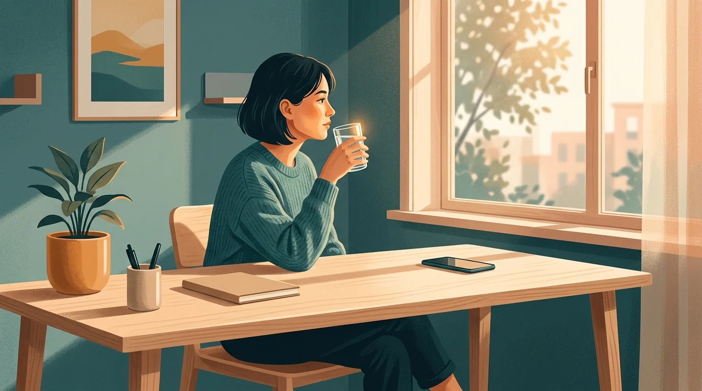

A Guide to Dopamine Detox: Rules, Timelines, and Expectations
The brain science behind your scroll habit — and a step-by-step reset that actually works.

You made a rule. No phone before 9am. You kept it for four days — long enough to feel proud, not long enough to make it stick. Then came the Sunday morning when you woke up already anxious, and your hand found your phone before your eyes finished opening. You told yourself you'd just check the weather. You checked the weather. Then Reddit. Then Instagram. Then a seventeen-minute YouTube tangent about a band you don't even like. By the time your coffee finished brewing, you'd consumed more content than a person in 1985 would have encountered in a week.
Your neck was stiff. Your focus was gone. And you felt, somehow, emptier than when you started.
This is what an overstimulated reward system feels like from the inside — and it's exactly why "dopamine detox" became the most searched wellness term that nobody quite agrees on. A dopamine detox (also called a dopamine fast or dopamine reset) is a structured period of reducing high-stimulation activities — especially social media, short-form video, and algorithmic feeds — to let your brain's reward circuitry recalibrate. The goal isn't to eliminate dopamine, which is neurologically impossible; it's to lower your stimulation baseline until ordinary life feels interesting again.
What Dopamine Actually Does (Hint: It's Not About Pleasure)
Most people think of dopamine as the brain's pleasure chemical — the thing that fires when something feels good. That's only half the story, and it's the half that leads to the most confusion about detoxing.
According to Harvard Health, dopamine is most notably involved in helping us feel motivated to pursue pleasure — not in experiencing it. The distinction matters enormously. Dopamine fires in anticipation of a reward, not just during the reward itself. It's your brain's way of saying: "that was worth doing, go do it again." It governs attention, learning, motivation, and movement — not just how good something feels.
Neuroscientists call this the prediction error signal. When something is better than expected, dopamine spikes. When something is exactly as expected, it flat-lines. When something is worse than expected, it dips below baseline. Instagram's algorithm is a prediction-error machine — each swipe is a micro-gamble with unpredictable payoffs. You never know if the next post will be boring or the funniest thing you've seen this week. That unpredictability is what makes it so hard to stop. Psychologists call the mechanism variable-ratio reinforcement — the same principle that makes slot machines the most addictive form of gambling ever designed.
When you scroll for two hours a day, every day, your brain adapts. The baseline rises. Activities that don't deliver rapid, unpredictable novelty — reading a book, taking a walk, talking to a friend without checking your phone — start to feel flat. Not because they're objectively less valuable, but because your brain's reward threshold has been calibrated to expect constant stimulation. This is the core problem that a dopamine detox is designed to fix. It's also why screen time anxiety tends to feel worst in the mornings — when your cortisol is already spiking and your first digital hit raises the bar for the entire rest of the day.
The "Detox" Part Is a Misnomer — Here's What Actually Happens
Let's be precise: Cleveland Clinic is blunt about this. There is no such thing as a true dopamine detox. Dopamine isn't a toxin. You can't flush it out of your system the way you might eliminate caffeine. Your body requires it to function — for every movement, every heartbeat-skip of anticipation, every decision you make. Trying to eliminate dopamine would kill you.
What you can do — and what actually works — is reduce the frequency and intensity of dopamine-spiking behaviors long enough for your reward system to recalibrate downward. This is essentially cognitive behavioral therapy rebranded with a catchier name. Cleveland Clinic notes that dopamine detox is really just targeted behavior modification: identifying the specific high-stimulation activities that have warped your baseline, and systematically reducing exposure to them.
A 2024 literature review in PMC found that while dopamine fasting has no one-size-fits-all protocol, the studies that showed the most benefit focused on reducing impulsive behaviors specifically — not on achieving total abstinence from screens or pleasure. Extreme forms, the review noted, can actually cause anxiety and social withdrawal. The sweet spot is targeted, intentional reduction — not self-punishment.
This is important. A dopamine detox isn't a fast. It isn't a punishment. It's a recalibration. The goal is to get back to a baseline where a conversation, a book, a meal, or a walk can feel like enough.
Five Signs Your Reward System Needs a Reset
Before you commit to a protocol, it helps to know what overstimulation actually looks like from the inside. These are the most common warning signs:
You can't sit with boredom for more than thirty seconds. The moment a task stops being actively engaging — waiting for a page to load, a pause between meetings, a minute in line — your hand goes to your phone automatically, without a conscious decision. This isn't distraction. This is your nervous system refusing to tolerate unstructured time.
Books feel impossibly slow. You used to read. Now the same page takes three attempts to get through because your attention keeps fragmenting. It's not that you've lost intelligence — it's that your brain has been trained to expect a new stimulus every four seconds, and a paragraph asks it to hold attention for twenty.
You reach for your phone first thing every morning. Before you're vertical. Before coffee. The phone comes first, and the rest of the day gets organized around the emotional weather you absorbed in those first ten minutes. This is one of the most reliable indicators that your reward circuitry is running the show.
Real-world rewards feel underwhelming. A good meal, a compliment, a finished project — things that used to feel satisfying now feel kind of muted. Not bad, just not quite enough. This is dopamine tolerance at work: your baseline has risen so high that ordinary positive experiences don't clear it.
You feel anxious when separated from your device. Not just bored — anxious. Heart rate uptick. A low-grade urgency with no identifiable source. Doomscrolling creates a physiological feedback loop where your nervous system starts treating your phone as a regulation device, which means its absence triggers a stress response.
If two or more of these describe your daily experience, a structured reset is worth attempting.
The Three Levels of a Dopamine Reset
Not every dopamine reset looks the same. Match the level to your current situation and tolerance — starting too extreme is the fastest way to quit on day two.
Level 1: The Friction Layer (Ongoing)
This is the sustainable floor. You don't cut anything out entirely — you add friction before each high-stimulation activity. A brief pause, a physical act, a moment of conscious choice before the feed loads. Research on habit formation consistently shows that introducing even small delays between impulse and action dramatically reduces compulsive consumption. This is the principle behind apps like Sip & Scroll: a sip of water and a quick selfie before TikTok or Instagram unlocks isn't a barrier, it's a reset — a moment where your prefrontal cortex gets to show up before your limbic system makes the decision for it.
Level 1 is appropriate for most people, most of the time. It's not dramatic enough to feel like a diet, which is exactly why it's the most likely to become permanent.
Level 2: The 24–72 Hour Social Media Fast
Delete the apps from your home screen for a weekend. Not from your phone — just from your home screen, so accessing them requires deliberate effort. No TikTok, no Instagram, no news feeds. Podcasts and music are fine. Texting is fine. The target is algorithmic feeds specifically — the infinite scroll formats engineered for maximum novelty-per-second.
Expect the first twelve hours to feel genuinely uncomfortable. That discomfort is informative, not dangerous. It's your nervous system recalibrating — recognizing that the feed isn't coming and learning, slowly, to tolerate ordinary stimulation instead. By hour twenty-four, most people report that boredom starts to shift into something quieter and more sustainable.
Level 3: The Full Digital Fast (1–7 Days)
No streaming, no social media, no gaming, no news. Email and essential messaging only. This is the version that gets written up in personal essays and goes viral — but it's also the hardest to sustain and the least necessary for most people. Reserve Level 3 for deliberate transition periods: the start of a new creative project, a vacation, a period of burnout recovery.
The research supports that a full fast can produce meaningful shifts in baseline stimulation tolerance, but the benefits tend to erode within days of returning to normal consumption habits if no architectural changes are made. Level 3 without a Level 1 maintenance practice is a reset with no follow-through.
What to Expect: A Realistic Hour-by-Hour Timeline
The biggest reason people abandon dopamine detoxes isn't lack of motivation — it's unmet expectations. They expect to feel calm and clearheaded by lunchtime on day one. What they actually feel is restless, slightly irritable, and convinced this isn't working. Here's what's actually happening:
Hours 1–4: The itch. Your hand will reach for your phone without any conscious decision. You'll pick it up, remember, put it down, and feel oddly unsatisfied. This is baseline behavior surfacing without its usual outlet. Notice it without judgment — it's data about how automatic the habit has become.
Hours 4–12: Irritability peaks. Your brain is running its usual dopamine-seeking routines and coming up empty. This can manifest as low-grade frustration, difficulty concentrating on anything, or an odd restlessness that's hard to localize. This is the phase most people mistake for evidence that the detox isn't working. It's actually evidence that it is — your brain is registering the absence of its normal inputs.
Day 2: The boredom plateau. The acute discomfort usually softens, but it's replaced by a flat, grey boredom. This is the phase where most people relapse. Sitting with boredom without a dopamine rescue feels genuinely unpleasant if you haven't done it in a while. But boredom, neuroscientists argue, is a signal — not an emergency. It's your default mode network activating, the mental state associated with creativity, memory consolidation, and the kind of slow thinking that produces ideas. The boredom is the medicine.
Days 3–4: Recalibration begins. Quieter activities start to feel more interesting. You might notice that you finish a meal without looking at anything. That a conversation holds your attention in a way it hasn't recently. That you read three chapters of a book before checking the time. These aren't dramatic — they're small, almost imperceptible shifts in what feels like enough. That's the reset working.
Week 2 and beyond: The new baseline. If you've maintained significantly reduced stimulation, your reward system will have shifted enough that the pull of the feed is noticeably weaker. Not gone — the algorithms are still there, still optimized to pull you back in. But the physiological urgency eases. You can see the notification and decide not to check it. That gap between impulse and action is where your autonomy lives.
Why Willpower Alone Won't Hold — And What Builds a Structure That Will
Here's the honest part: a dopamine detox that relies entirely on personal discipline is structurally fragile. Your willpower is a finite resource that depletes over the course of the day. The algorithms you're fighting against are the product of billions of dollars in engineering specifically optimized to defeat your self-control at its weakest moments — late at night, first thing in the morning, during any moment of unresolved stress.
The research on behavior change consistently points to the same conclusion: environment design beats willpower. Architectural friction — making the distracting choice harder and the intentional choice easier — outperforms motivation every time over the long run. This is why a structured 30-day digital declutter works better than a willpower sprint: it systematically removes the environmental cues that trigger automatic consumption before you're ever asked to resist them.
The same principle is why Sip & Scroll works differently from hard-blocking apps. Cold turkey blockers — the kind that require admin passwords to override and lock you out completely — have a well-documented failure mode: the frustration of being denied creates a rebound effect, and most users either bypass the blocker or delete it entirely within a few weeks. The problem isn't the app; it's the psychological mechanism. Restrictions feel like punishment, and punishment produces resistance, not recalibration. What actually creates lasting behavior change is friction — a small, tolerable obstacle that interrupts automaticity without triggering defiance.
Sip & Scroll adds exactly that layer. Before you can open TikTok or Instagram, you pause, sip water, and take a quick selfie confirming it. The app then gives you 45 minutes of unblocked access. That pause — five seconds of physical action — is enough for your prefrontal cortex to register a choice rather than a reflex. Hydration comes free with every session. And the 45-minute session model means you're automatically introduced to natural stopping points instead of staring into an infinite feed until something external pries your phone out of your hand. It's not discipline. It's architecture.
A dopamine detox isn't a permanent rejection of scrolling. It's a system reset that restores the gap between stimulus and response — the space where you get to decide whether you actually want to open the app, or whether the urge was just noise. Keep that gap intact, and the algorithm loses its grip. Lose the gap, and even the best intentions evaporate before you've read the second notification. The structure isn't the constraint. It's the freedom.
Ready to reset your reward system?
Add a sip of water between you and the feed. A gentle pause that turns a reflex into a choice.
Download Sip & Scroll Free